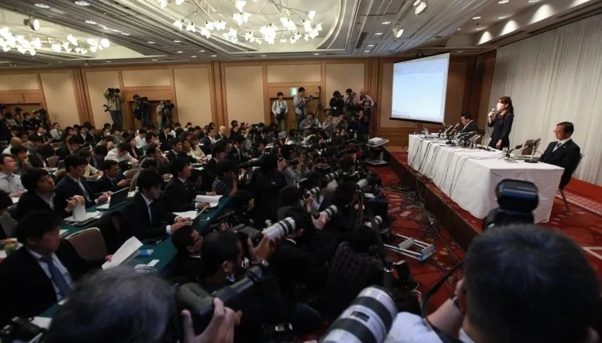
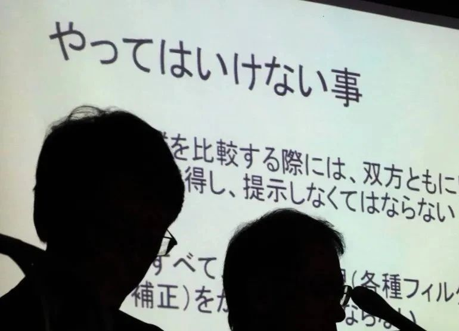
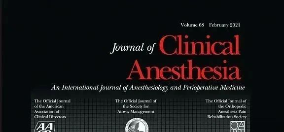
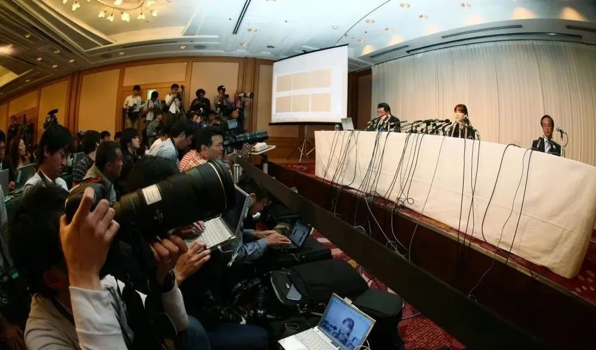

别等身体亮红灯！百年春自体干细胞，为您定制细胞级抗衰防线
2026-03-04

About Us
关于百年春
专家表示，日本载入科学史的STAP细胞造假丑闻事件爆发十年后，导致该丑闻的结构性问题仍然存在，为研究人员篡改研究和临床数据留下了充足的空间。
据《撤稿观察》网站Retraction Watch数据，全球撤稿次数最多的前10名研究人员中有 5 名来自日本，均为医生。排名第二的藤井义隆 (Yoshitaka Fujii) 撤稿 172 篇。
本文作者TOMOKO OTAKE，原载于日本时报(The Japan Times），原标题Little change in Japan’s research sector 10 years after stem cell fraud（干细胞造假十年后日本研究领域几乎没有变化）。干细胞与外泌体专家团队编译整理如下：

图：2014 年，日本科学家小保方晴子（Haruko Obokata）在大阪市接受记者采访。专家表示，STAP细胞治疗丑闻事件爆发十年后，导致该丑闻的结构性问题仍然存在，为研究人员篡改研究和临床数据留下了充足的空间。
日本载入科学史的造假丑闻
十年前，日本研究员小保方晴子在《自然》杂志上发表了两篇论文，引起轰动。她在论文中声称发现了一种利用所谓的 STAP 方法可以轻松的制造干细胞。
小保方和她的团队声称，他们利用 STAP（刺激触发获得多能性的简称）技术，找到了一种只需将成年小鼠细胞浸泡在弱酸性液体中即可将其重新编程为通用细胞的方法。这项研究被誉为革命性研究，有望为医学领域开辟新的可能性。
但在她的研究成果发表以及随后的公关宣传不到三个月后，她当时的雇主日本理化学研究所就建议撤回这些论文，称她伪造了数据。
2014 年 4 月 9 日，小保方在大阪一家酒店里，在数百名记者和电视台工作人员面前，坚决捍卫她的研究成果，声称 STAP 细胞确实存在。然而，在接下来的几个月里，没有人能够按照她的方案复制这些细胞。同年 12 月，她被解雇，从此从公众视野和记忆中消失。
STAP细胞造假事件是与舍恩事件、黄禹锡事件并列的三大科研丑闻之一。实际上，STAP细胞造假事件发生后，在日本科研不端事件依然屡禁不止。
日本文部科学省根据从2015年度开始适用的关于研究不端行为的新的指导方针，在网站上公开了在文部科学省预算实施的研究项目中被认定为不端行为的案例。根据该一览表，自2015年-2022年度以来，包括一稿多投在内，被认定为不端行为的案件共计34起。
但专家表示，十年过去了，导致这一丑闻的结构性问题仍然存在，为研究人员篡改研究和临床数据留下了充足的空间。
更糟糕的是，STAP 细胞造假丑闻似乎教会了许多研究机构如何将正在萌芽的丑闻掩盖起来，负责科学与社会研究小组的独立病理学家 Eisuke Enoki （榎木）说。
他说：“我觉得，这一丑闻让许多研究机构更加不愿意披露可疑案件，也让他们更有可能隐瞒这些案件。”
Eisuke Enoki 补充说，虽然机构在了解到可能存在研究欺诈时会进行初步调查，但他们往往在初步调查结束后披露很少的信息，只是说他们发现研究人员没有不当行为。
日本细胞造假事件影响恶劣
2014年，日本科技部门发布了一系列关于科研不端行为的指导方针，部分是为了应对STAP细胞事件丑闻。
该指南明确了对犯有剽窃、捏造和伪造等不当行为的研究人员的处罚，要求他们退还已收到的资金，并限制他们获得进一步资助的资格。

图：东京大学在新闻发布会上宣布了一起研究不端行为案例。
他们还要求研究机构的所有研究人员在申请资金之前必须接受研究伦理培训。
研究人员进行此类在线道德培训是标准做法。但京都药科大学药理学教授田中聪 (Satoshi Tanaka) 表示，线上学习课程不足以确保良好的做法，他一直关注研究诚信问题。
“如果你关注研究‘伦理’，你就是在告诉人们不要做坏事，”田中说。“大多数人会觉得，‘我已经知道了。’这基本上和告诉人们不要偷钱或杀人是一样的。”
日本造假不断，撤稿量“勇夺”世界第一
田中区分了研究伦理和研究诚信之间的区别，并表示应该在研究人员职业生涯的早期阶段就对他们进行研究诚信方面的教育。
“诚信更像是专业精神，”他说。“例如，做实验的人自己收集数据来写论文。如果他们愿意，他们可以做各种各样的欺诈行为，但如果他们有专业精神，他们就不会这么做。诚信意味着一些简单的事情，比如养成认真做实验笔记的习惯。它们更像是可以传授的技术。”
田中指出，日本许多被发现存在不当行为的研究人员都是医生，他说，造成这种趋势的原因是他们在医学教育中没有接受过如何处理生物实验数据的教育。
他说，通常是在他们开始从事医生职业后才开始撰写论文，而在那个阶段，没有人可以教他们如何正确管理数据。
田中指出，美国网站“Retraction Watch”主要追踪研究不端行为和撤回论文。
撤稿次数最多的前 10 名研究人员中有5名来自日本，均为医生。排名第二的藤井善隆 (Yoshitaka Fujii) 撤稿183 篇，其后依次为上岛宏信 (Hironobu Ueshima)（124 篇）和佐藤义弘 (Yoshihiro Sato)（122 篇），分别位列第三和第四，岩本淳 (Jun Iwamoto)（90 篇）和斋藤裕二 (Yuhji Saitoh)（56 篇）分别位列第六和第八。
藤井善隆（Yoshitaka Fujii），日本人，麻醉领域专家。有183篇的世界撤稿纪录。就在2023年6月，一个新的世界记录诞生了。在《撤稿观察》网站上，德国人约阿希姆·博尔特（Joachim Boldt）以撤稿184篇的“成绩”超过卫冕冠军日本人藤井善隆（Yoshitaka Fujii）的183篇，以微弱“优势”打破了世界撤稿纪录。实际上，博尔特多年前曾在这个“冠军宝座”停留了1年时间，随后被藤井善隆赶超。巧合的是，两人均为麻醉领域专家。

图：Hironobu Ueshim的论文撤稿说明，本文应主编的要求撤回，因为它包含捏造/伪造的数据。主编的决定是基于日本麻醉医师学会的调查，该调查得出的结论是没有进行任何研究，包括患者背景在内的所有数据都是捏造的。
前东京昭和大学医院Hironobu Ueshima也是日本麻醉领域的医生，目前有124篇文章被发现存在伪造数据和其他科研不当行为，位居撤稿榜单的第三名。
榎木和田中都认为，过去十年来，研究环境恶化，研究经费的分配竞争加剧。这给科学家增加了压力，迫使他们发表更多论文，以继续研究并保住工作。
日本研究人员用人工智能撰写的论文
日本并不是唯一一个受到科研不端行为和“不发表就出局”文化困扰的国家。
如今，人工智能机器人 ChatGPT 让研究写作变得更容易。Retraction Watch 目前列出了近 100 篇至少部分使用 ChatGPT 撰写的论文。

2014 年，日本科学家小保方在大阪市向记者发表讲话。
根据美国国家科学技术政策研究所 2023 年的报告，自然科学领域的论文数量在全球范围内持续增长，到 2021 年将超过 200 万篇，而 1981 年为 40 万篇，2014 年为 140 万篇。
“现在有更多质量低劣的期刊，包括所谓的掠夺性期刊，研究人员只有付费才能发表论文，”Enoki 说。
Takana 根据多方研究估计，全球约 20% 的科学论文涉嫌存在某种数据违规行为，近些年这种情况在日本尤为严重和恶劣。
总结
其实目前国内已经有很多干细胞企业技术，比国外的更加先进，并不用专门远赴国门外回输干细胞，并且近些年，日本制造业造假丑闻不断，包括医药、汽车、造船、家用电器等行业，多名分析人士指出，在造假丑闻的背后，是日本“工匠精神”光环逐渐褪色，也是当下日本制造业日薄西山的写照。
你若喜欢，别忘了点个在看哦
素材来源官方媒体/网络新闻